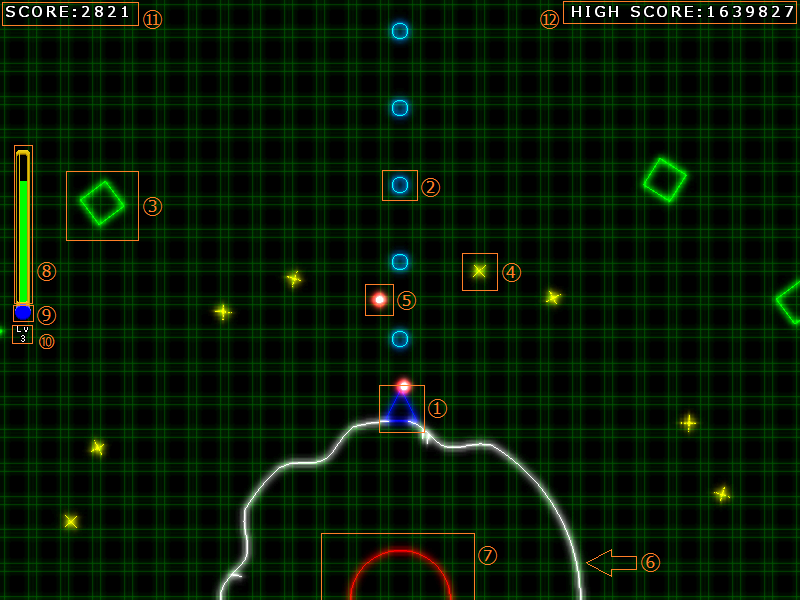

ゲームの目的
プレイヤーのいる惑星を破壊しようとしてくる敵から惑星を守りましょう。敵はWaveごとにまとまって攻めてきます。
クリア条件
惑星が破壊されないように攻めてくる敵と、数Waveごとにくるボスを倒してください。ボスは全部で6体おり、最後のボスを倒すとクリアです。
ゲームオーバー条件
プレイヤーのHPが0になりプレイヤーが消滅するか、惑星が惑星中心付近の惑星破壊域よりへこんでしまうとゲームオーバーです。
ゲームオーバーになった場合は後述するエネルギーを引き継ぐとともに惑星を修復し、その時点でのWaveから再開することができます。ただしスコアは半分になります。
画面

１．プレイヤー
２．プレイヤーの弾
３．敵
種類の異なる敵もいます。
４．敵の弾
種類の異なる敵弾もあります。
５．エネルギー
敵は倒されるとエネルギーを落とします。エネルギーを一定以上取得するとプレイヤーのレベルが上がり、能力値が増加します。また、獲得したエネルギーを使用して特別な動作を行うことができますが、エネルギーが減少するとレベルも下がります。
敵が落とすエネルギーの挙動は空中で倒したか、地上で倒したかで異なります。空中で倒した場合は自動的にプレイヤーに集まってくるので自分で回収する必要はありません。一方地上で倒した場合はエネルギーはその場にとどまってしまうので自分で回収する必要があります。
ただし、敵は地上で倒したほうが空中で倒した場合よりも大量のエネルギーを落とします。
６．惑星
プレイヤーが守る惑星です。敵の爆発でへこみます。
７．惑星破壊域
惑星がこのラインを越えてへこむとゲームオーバーになります。
８．体力ゲージ
ゲージが0になるとゲームオーバーです。
９．エネルギーゲージ
次のレベルまでに必要なエネルギーを表しています。
１０．レベル表示
数字が大きくなるほどプレイヤーは強くなります。
１１．現在のスコア
敵を倒すと加算され、Wave終了ごとに条件によってボーナスが追加されます。ゲームオーバーになるとスコアは半分になってしまいます。
１２．ハイスコア
そのままです。
操作方法
メニューでの操作
項目選択:UP、DOWNキー
決定:Cキー
キャンセル:Aキー
ゲームでの操作
左右移動(LEFT、RIGHTキー)
移動します。空中でも移動できますが地上より融通が利きません。
弾発射(Aキー)
弾を発射して、迫ってくる敵を攻撃します。レベルによって弾の速度、連射速度、同時発射数、攻撃力が変化します。
横に弾噴射(Xキー)
プレイヤーの左右に弾を噴射し、地上の敵を倒します。レベルによって弾の噴射速度、消滅時間、攻撃力が変化します。
ジャンプ(Cキー)
ジャンプします。押す長さによってジャンプする高さが変化します。レベルによってジャンプできる高さが変化します。
しゃがむ(DOWNキー)
しゃがみます。弾をよけられるかもしれません。ただししゃがみ中はほかの行動ができません。また、空中でしゃがもうとすると早く落下することができます。
クローン作製(Zキー)
勝手に弾を連射する、プレイヤーのクローンを作成します。キーを長く押してから離すことでエネルギーを多く消費して、より強いクローンを作ることができます。クローンは強いほど弾の発射・連射速度、攻撃力、消滅するまでの時間などが増加します。エネルギーが0の場合は作成できません。また、クローン作製直後に連続してクローンを作ることはできません。
シールド(Dキー)
キーを押している間、プレイヤーの周りにシールドが出現しすべての攻撃を防ぐことができます。
体力回復(Sキー)
キーを押している間、体力を回復し続けます。この動作はエネルギーを大量に消費量します。
ポーズ(SPACEキー)
ゲームを一時中断してポーズ画面を開きます。ここからタイトルに戻ったりゲームを初めから始めたりすることができます。また操作方法の確認もできます。もう一度SPACEキーを押すことでゲームを再開します。
その他
ゲームパッドに対応しています。使用する場合は起動する前に接続してください。ボタンの割り当ては以下の通りです。
| UP、RIGHT、UP、DOWNキー | 左スティック、十字キー(ハットスイッチ) |
| Aキー | Bボタン(ボタン4) |
| Cキー | Aボタン(ボタン3) |
| Xキー | Yボタン(ボタン2) |
| Zキー | Xボタン(ボタン1) |
| Dキー | Rボタン(ボタン6) |
| Sキー | Lボタン(ボタン5) |
| SPACEキー | STARTボタン(ボタン12) |